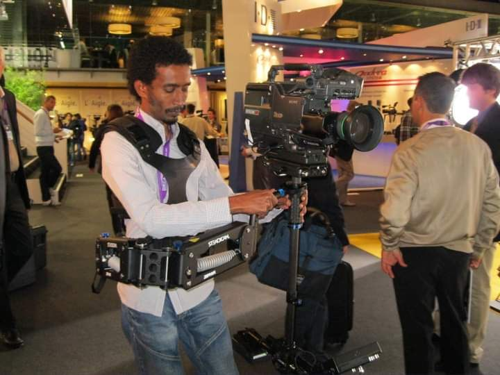
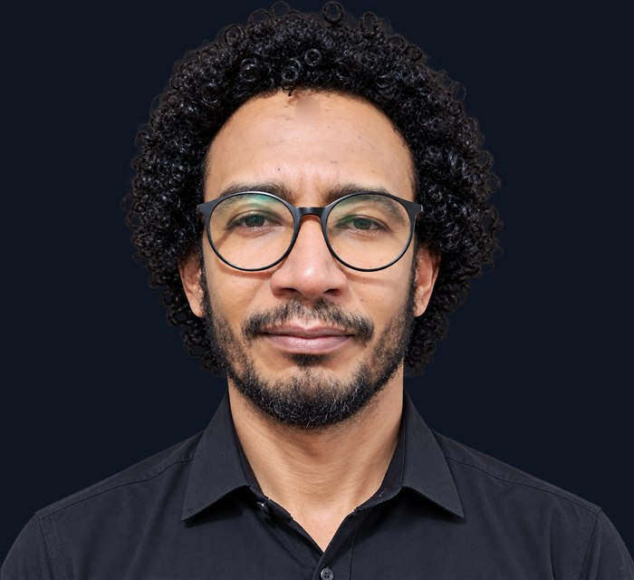

Film & Television Director
لؤي بابكر صديق
اثنان وعشرون عاماً خلف الكاميرا: برامج حوارية وحفلات ووثائقيات وإعلانات — والخيط الواحد بينها أن تُبنى الصورة حول فكرة. Twenty-two years behind the camera — talk shows, concerts, documentaries and commercials. One thread runs through all of it: the image is built around an idea.
من حلقات البرامج إلى الحفلات والإعلانات — كل بطاقة تعرض مقطعاً حقيقياً من العمل، واضغطها لتشاهده بالصوت. From episodes to concerts and commercials — every card plays a real clip from the work. Click one to watch it with sound.
كل مشروع في لوحته، وتحته زر يفتح وثيقته مباشرة — ثم بقية ملفاته: الأدلة والعروض والعقود. Every project on its own plate, with a button that opens its document — then the rest of its files: guides, decks and contracts.
كل وثيقة تُفتح في نافذة جديدة. وهي خاصة حتى تشاركها أنت من زر المشاركة داخلها. Each document opens in a new tab. They stay private until shared from the Share menu inside each one. مركز الروابط الكامل ↗Full link index ↗

من غرفة التحكم إلى المواقع الخارجية — صور من مواقع عمل حقيقية. اضغط أي صورة لتراها بمقاسها. From the gallery to location — photographs from real shoots. Click any frame to see it at full size.
للإخراج، أو الإنتاج المنفّذ، أو تطوير فورمات جديد من الفكرة إلى الحلقة الأولى. أرسل سطراً واحداً عمّا تريد صنعه، ويصلك الرد بخطة أولى. For directing, executive production, or developing a new format from the idea to the first episode. Send one line about what you want to make, and you get a first plan back.